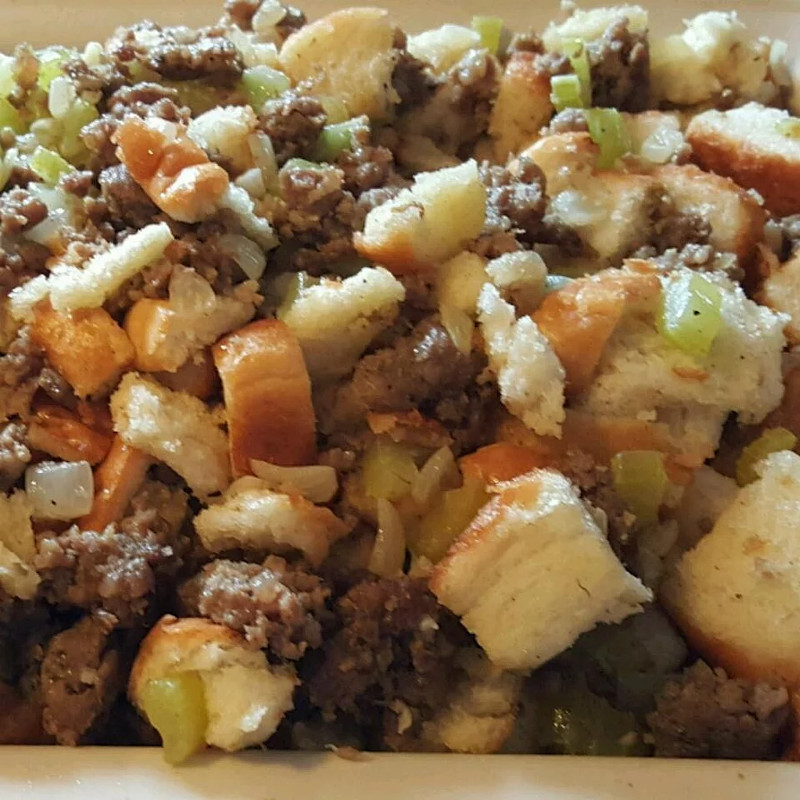

Sausage Stuffing

Savory Sausage Stuffing
Ingredients
- 1 pound breakfast sausage
- 3/4 cup chopped onion
- 1 1/2 cups finely diced celery
- 3.4 cup margarine, melted
- 8 cups white bread cubes
- 3 teaspoons poultry seasoning
- 1/4 teaspoon ground black pepper
Directions
- Cook sausage. Drain
- Melt margarine. Add enough sausage drippings to make 1 cup.
- Saute; onions and celery in margarine/dripping mixture until onion is tender. DO NOT BROWN. Stir in about 1/3 bread cubes. Put in cubes. Put in big bowl and add remaining bread cubes, poultry seasoning, and pepper. Watch your hands, it's hot. Mix well.
- Stuff turkey. You can also omit the sausage, increase the bread cubes to 9 cups, abd add a teaspoon or two of salt. You can also add apples, giblets, oysters, etc. This recipe is very adaptable. When cooking extra in the oven, place the stuffing in a buttered casserole dish, and place in a pan of hot water. Cover, and baste with turkey drippings occasionally